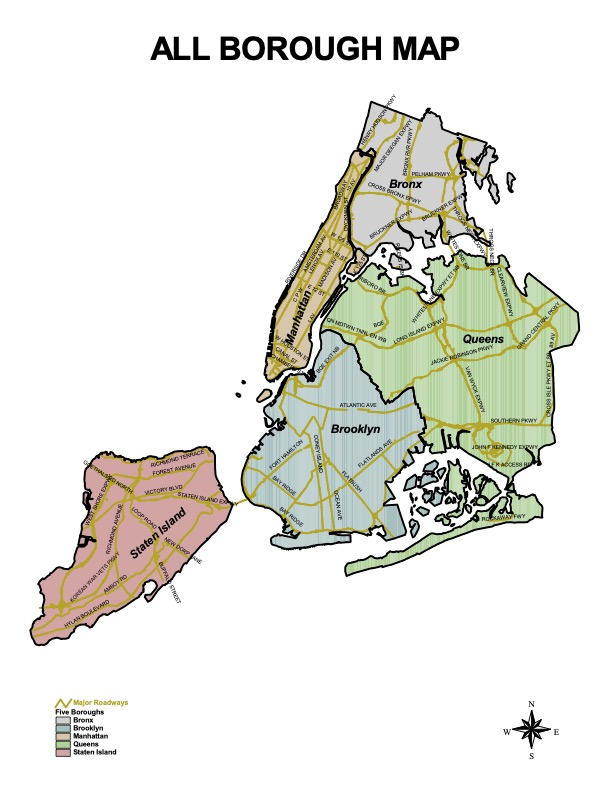

My Biography

My Research Interests
My name is Angely C. Suarez DeJesus and I am currently pursuing a PhD in the Text & Technology doctoral program at the University of Central Florida. My research interests are within the areas of digital humanities, rhetoric and composition, and critical cultural studies. With the rise of artificial intelligence (AI) technologies, I am studying the effects of large language models in Latino women's rhetoric, using critical code studies, critical making, translation, and hypertext theory as a framework to critically understand how the technology is shaping this culture. Nevertheless, to arrive here, my journal began many years ago as an immigrant child from the Dominican Republic and raised in the South Bronx.
Where It All Began..
 In 1989, my brother and I arrived at JFK Airport from Santo Domingo, Dominican Republic. I came to an apartment with my aunt, cousins, and their babies. My backyard was a land used as a garbage disposal site and the sound of the train was constant. My neighborhood was filled with Cubans, Puerto Ricans, Blacks, Dominicans, and Hondurans. I learned varying types of Spanish aside from my home Dominican Spanish along with other phrases attached to the arroz con pollo [chicken and rice] that was my block: the South Bronx in Cauldwell Avenue. It was a melting and buzzling pot of minorities [listos] para la batalla [for the battle] of everyday life!
In 1989, my brother and I arrived at JFK Airport from Santo Domingo, Dominican Republic. I came to an apartment with my aunt, cousins, and their babies. My backyard was a land used as a garbage disposal site and the sound of the train was constant. My neighborhood was filled with Cubans, Puerto Ricans, Blacks, Dominicans, and Hondurans. I learned varying types of Spanish aside from my home Dominican Spanish along with other phrases attached to the arroz con pollo [chicken and rice] that was my block: the South Bronx in Cauldwell Avenue. It was a melting and buzzling pot of minorities [listos] para la batalla [for the battle] of everyday life!
I saw my single mother struggle, needing my siblings and I to go with her to appointments to translate during doctor appointments, immigration recertification, and food shopping. Little did I know that I was engaging navigating linguistic and identity borderlands (Anzaldua). These spaces became a metaphorical spatial and linguistic hypertextual experience. In 2018, I moved to Florida and 2 years later I enrolled at UCF. I came back to my cultural roots after conducting a network mapping project during my M.A in Educational Leadership program at UCF, in which I saw how media technology has the incredible potential to enhance the voice and stories of many, but within the same power, completely erase it. In 2022, LLMs became a point of curiosity due to its inherent biases embedded in their algorithms and data, and flattening the process of translation and its own form of critical making processes.
Hence, my experiences in New York have been eclectic and multicultural, but I realized that one can easily get lost in such a melting pot. Today, these experiences along with my job as a K-12 teacher have given me an interdisciplinary way of thinking about culture, technology, and education.
Interests
 During my 10-year break before going to grad school, I took on road biking, which surprisingly became a new passion. Training was difficult but highly gratifying. I rode for the Multiple Sclerosis organization, the Five Boro Bike Tour, and for the Lung Cancer Association (200 miles in 3 days). Unfortunately, we lost our team captain, Bob, a few years ago. Thank you Bob for helping me perfect my riding.
During my 10-year break before going to grad school, I took on road biking, which surprisingly became a new passion. Training was difficult but highly gratifying. I rode for the Multiple Sclerosis organization, the Five Boro Bike Tour, and for the Lung Cancer Association (200 miles in 3 days). Unfortunately, we lost our team captain, Bob, a few years ago. Thank you Bob for helping me perfect my riding.
Museums have always been my happy place. Space of zen and curiosity. Aside from working at The Brooklyn Children's Museum, my favorite museum was and still is the Metropolitan Museum of Art. I have a mission of completing the building tour, but once I reach the Egyptian exhibit, I never move from the space. I visit the Guggenheim more the spiral architecture; laying at the center and taking a shot looking to the ceiling. The Museum of Natural History has captivated me for the artistry of encompassing natural occurrences within concrete walls. Last but not least, I recommend to do the 5-Borough City Bus Tour because you can experience the city in a different light, even you live there.

View HTML Source Code
<!DOCTYPE html>
<html lang="en">
<head>
<title>Angely C. Suarez DeJesus' Biography</title>
<link rel="stylesheet" type="text/css" href="biography.css" />
<link rel="stylesheet" href="https://cdnjs.cloudflare.com/ajax/libs/highlight.js/11.9.0/styles/github.min.css" />
<meta name="author" content="Angely C. Suarez DeJesus" />
<meta charset="UTF-8" />
</head>
<body>
<table border="0" cellspacing="0" cellpadding="0" style="width: calc(100% - 4in); margin: 0 auto;">
<tr>
<td colspan="3" bgcolor="#DDDDDD">
<div style="position:relative; min-height:200px; display:flex; align-items:center; justify-content:center;">
<h3><font face="Arial, Helvetica" color="#000000"><i>My Biography</i></font></h3>
<img src="7 Me.jpg" height="200" width="100" alt="My Photo" style="position:absolute; right:0; top:0;" />
</div>
</td>
</tr>
<tr><td> </td></tr>
<tr><td> </td></tr>
<tr>
<td width="2%"></td>
<td colspan="2">
<h3>My Research Interests</h3>
<p class="dropcap">My name is Angely C. Suarez DeJesus and I am currently pursuing a PhD in the Text & Technology doctoral program at the University of Central Florida. My research interests are within the areas of digital humanities, rhetoric and composition, and critical cultural studies. With the rise of artificial intelligence (AI) technologies, I am studying the effects of large language models in Latino women's rhetoric, using critical code studies, critical making, translation, and hypertext theory as a framework to critically understand how the technology is shaping this culture. Nevertheless, to arrive here, my journal began many years ago as an immigrant child from the Dominican Republic and raised in the South Bronx.
</p>
<h3>Where It All Began..</h3>
<p class="dropcap"><img src="10 My Family 2.jpg" height="300" width="380" alt="My Family" style="float:left; margin-right:20px; margin-bottom:20px;" />In 1989, my brother and I arrived at JFK Airport from Santo Domingo, Dominican Republic. I came to an apartment with my aunt, cousins, and their babies. My backyard was a land used as a garbage disposal site and the sound of the train was constant. My neighborhood was filled with Cubans, Puerto Ricans, Blacks, Dominicans, and Hondurans. I learned varying types of Spanish aside from my home Dominican Spanish along with other phrases attached to the arroz con pollo [<i>chicken and rice</i>] that was my block: the South Bronx in Cauldwell Avenue. It was a melting and buzzling pot of minorities [<i>listos</i>] para la batalla [<i>for the battle</i>] of everyday life!
</p>
<p class="dropcap">I saw my single mother struggle, needing my siblings and I to go with her to appointments to translate during doctor appointments, immigration recertification, and food shopping. Little did I know that I was engaging navigating linguistic and identity borderlands (<i>Anzaldua</i>). These spaces became a metaphorical spatial and linguistic hypertextual experience. In 2018, I moved to Florida and 2 years later I enrolled at UCF. I came back to my cultural roots after conducting a network mapping project during my M.A in Educational Leadership program at UCF, in which I saw how media technology has the incredible potential to enhance the voice and stories of many, but within the same power, completely erase it. In 2022, LLMs became a point of curiosity due to its inherent biases embedded in their algorithms and data, and flattening the process of translation and its own form of critical making processes.
</p>
<p>Hence, my experiences in New York have been eclectic and multicultural, but I realized that one can easily get lost in such a melting pot. Today, these experiences along with my job as a K-12 teacher have given me an interdisciplinary way of thinking about culture, technology, and education.
</p>
<h3>Interests</h3>
<p class="dropcap"><img src="15 Bike Team AEBT.jpg" height="250" width="350" alt="Paisan Rock" style="float:right; margin-right:20px; margin-bottom:20px;" /> During my 10-year break before going to grad school, I took on road biking, which surprisingly became a new passion. Training was difficult but highly gratifying. I rode for the Multiple Sclerosis organization, the Five Boro Bike Tour, and for the Lung Cancer Association (200 miles in 3 days). Unfortunately, we lost our team captain, Bob, a few years ago. <i>Thank you Bob for helping me perfect my riding.</i>
</p>
<p class="dropcap">Museums have always been my happy place. Space of zen and curiosity. Aside from working at The Brooklyn Children's Museum, my favorite museum was and still is the Metropolitan Museum of Art. I have a mission of completing the building tour, but once I reach the Egyptian exhibit, I never move from the space. I visit the Guggenheim more the spiral architecture; laying at the center and taking a shot looking to the ceiling. The Museum of Natural History has captivated me for the artistry of encompassing natural occurrences within concrete walls. Last but not least, I recommend to do the 5-Borough City Bus Tour because you can experience the city in a different light, <i>even you live there.</i>
</p>
<img src="bridgerpt05_allboro.jpg" usemap="#AllBoroughMap" alt="All Borough Map" />
<map name="AllBoroughMap">
<area target="_blank" alt="Brooklyn Children's Museum" title="Brooklyn Children's Museum"
href="https://www.brooklynkids.org" coords="371,457,334,437" shape="rect" />
<area target="_blank" alt="Metropolitan Museum of Art" title="Metropolitan Museum of Art"
href="https://www.metmuseum.org" coords="301,319,317,336" shape="rect" />
<area target="_blank" alt="Solomon R. Guggenheim Museum" title="Solomon R. Guggenheim Museum"
href="https://www.guggenheim.org" coords="306,295,321,311" shape="rect" />
<area target="_blank" alt="The Museum of Natural History" title="The Museum of Natural History"
href="https://www.amnh.org" coords="285,303,298,317" shape="rect" />
<area target="_blank" alt="My Home In The Bronx" title="My Home In The Bronx"
href="https://www.apartmenthomeliving.com/apartment-finder/563-569-Cauldwell-Ave-Bronx-NY-10455-1993482"
coords="359,223,380,238" shape="rect" />
</map>
</td>
</tr>
<tr><td bgcolor="#FFFFFF"> </td></tr>
<tr>
<td width="2%"></td>
<td><a href="index.html"><p>Home</p></a></td>
</tr>
</table>
</body>
</html>Home